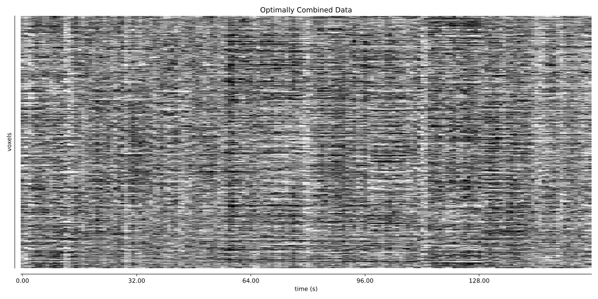
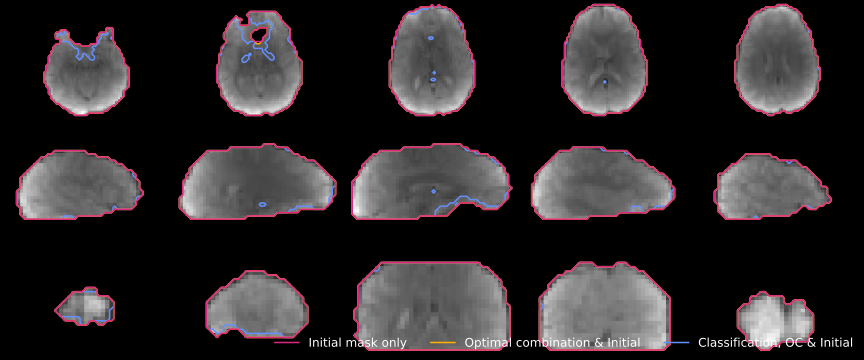
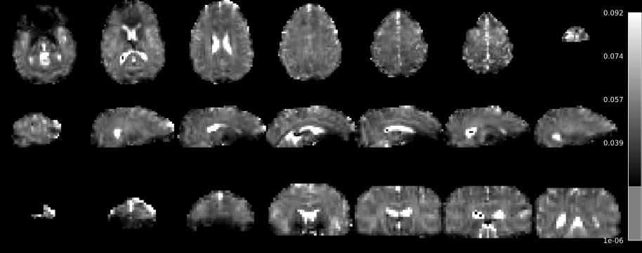
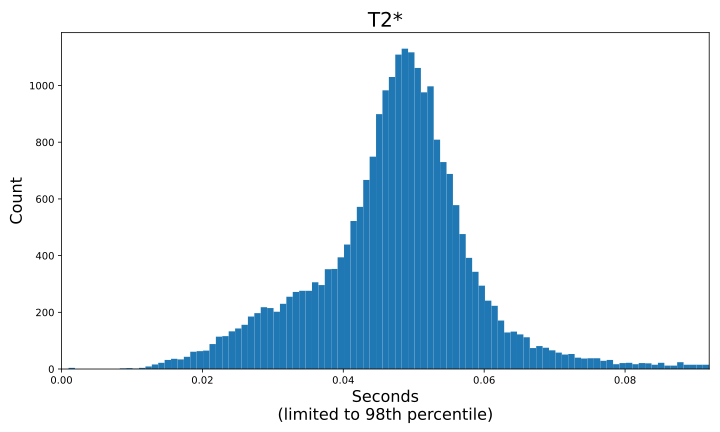
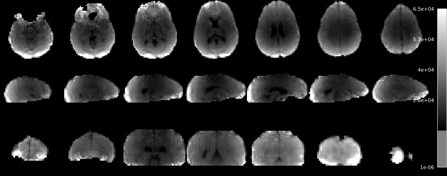
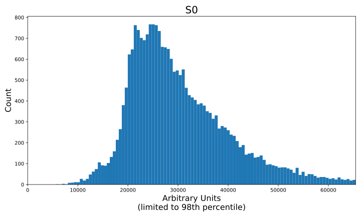
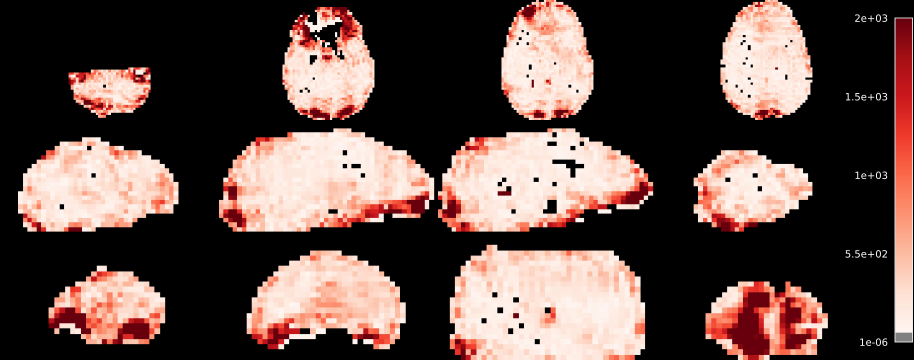
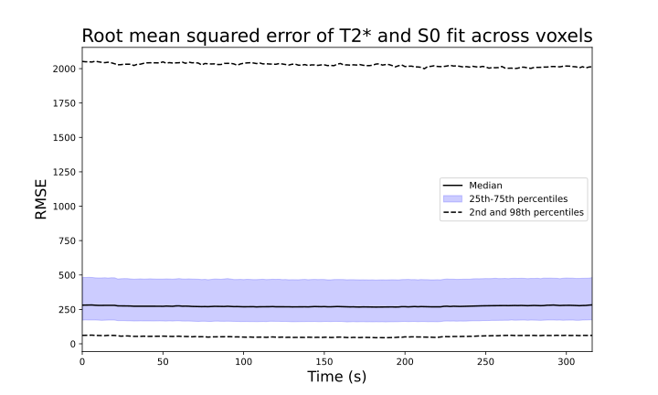
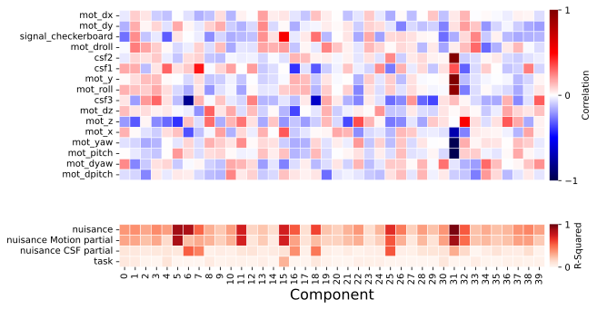

tedana: TE Dependent ANAlysis#
Process five-echo flashing checkerboard dataset for software demo#
Authors: Daniel Handwerker & Monika Doerig
Date: 23 June 2025
License:
Note: If this notebook uses neuroimaging tools from Neurocontainers, those tools retain their original licenses. Please see Neurodesk citation guidelines for details.
Citation:#
Tools included in this workflow#
tedana: The tedana Community, Ahmed, Z., Bandettini, P. A., Bottenhorn, K. L., Caballero-Gaudes, C., Dowdle, L. T., DuPre, E., Gonzalez-Castillo, J., Handwerker, D., Heunis, S., Kundu, P., Laird, A. R., Markello, R., Markiewicz, C. J., Maullin-Sapey, T., Moia, S., Molfese, P., Salo, T., Staden, I., … Whitaker, K. (2026). ME-ICA/tedana: 26.0.3 (26.0.3). Zenodo. https://doi.org/10.5281/zenodo.19410167
Publications#
DuPre, E. M., Salo, T., Ahmed, Z., Bandettini, P. A., Bottenhorn, K. L., Caballero-Gaudes, C., Dowdle, L. T., Gonzalez-Castillo, J., Heunis, S., Kundu, P., Laird, A. R., Markello, R., Markiewicz, C. J., Moia, S., Staden, I., Teves, J. B., Uruñuela, E., Vaziri-Pashkam, M., Whitaker, K., & Handwerker, D. A. (2021). TE-dependent analysis of multi-echo fMRI with tedana. Journal of Open Source Software, 6(66), 3669. doi:10.21105/joss.03669.
Kundu, P., Inati, S. J., Evans, J. W., Luh, W. M., & Bandettini, P. A. (2011). Differentiating BOLD and non-BOLD signals in fMRI time series using multi-echo EPI. NeuroImage, 60, 1759-1770.
Kundu, P., Brenowitz, N. D., Voon, V., Worbe, Y., Vértes, P. E., Inati, S. J., Saad, Z. S., Bandettini, P. A., & Bullmore, E. T. (2013). Integrated strategy for improving functional connectivity mapping using multiecho fMRI. Proceedings of the National Academy of Sciences, 110, 16187-16192.
Educational resources#
Dataset#
DuPre, E., Salo, T., Whitaker, K. J., Teves, J., Dowdle, L., Reynolds, R. C., & Handwerker, D. A. (2024, February 21). tedana data. Retrieved from osf.io/bpe8h
Installations and Imports#
%%capture
! pip install "nilearn==0.12.1" "tedana==26.0.3"
import module
await module.load('afni/24.3.00')
await module.list()
['afni/24.3.00']
%matplotlib inline
import os
import os.path as op
from glob import glob
import webbrowser
from IPython.display import display, Markdown, Image
from IPython.core.display import SVG
from tedana.workflows import tedana_workflow
Download 5 echo data#
%%time
dset_dir5 = 'five-echo-dataset/'
wd = os.getcwd()
if not glob(op.join(dset_dir5, 'p06*.nii.gz')):
os.makedirs(dset_dir5, exist_ok=True)
!curl -L -o five_echo_NIH.tar.xz https://osf.io/ea5v3/download
!tar xf five_echo_NIH.tar.xz -C five-echo-dataset
os.remove('five_echo_NIH.tar.xz')
% Total % Received % Xferd Average Speed Time Time Time Current
Dload Upload Total Spent Left Speed
0 0 0 0 0 0 0 0 --:--:-- --:--:-- --:--:-- 0
0 0 0 0 0 0 0 0 --:--:-- --:--:-- --:--:-- 0
100 162 100 162 0 0 523 0 --:--:-- --:--:-- --:--:-- 522
100 247 100 247 0 0 467 0 --:--:-- --:--:-- --:--:-- 467
0 0 0 0 0 0 0 0 --:--:-- --:--:-- --:--:-- 0
0 0 0 0 0 0 0 0 --:--:-- 0:00:01 --:--:-- 0
0 68.5M 0 14808 0 0 6968 0 2:51:48 0:00:02 2:51:46 6968
0 68.5M 0 146k 0 0 49142 0 0:24:21 0:00:03 0:24:18 142k
3 68.5M 3 2112k 0 0 522k 0 0:02:14 0:00:04 0:02:10 1094k
23 68.5M 23 16.2M 0 0 3296k 0 0:00:21 0:00:05 0:00:16 5692k
47 68.5M 47 32.5M 0 0 5510k 0 0:00:12 0:00:06 0:00:06 8494k
70 68.5M 70 48.5M 0 0 7061k 0 0:00:09 0:00:07 0:00:02 9.8M
94 68.5M 94 64.7M 0 0 8239k 0 0:00:08 0:00:08 --:--:-- 12.9M
100 68.5M 100 68.5M 0 0 8472k 0 0:00:08 0:00:08 --:--:-- 15.6M
CPU times: user 67.2 ms, sys: 58.3 ms, total: 126 ms
Wall time: 8.66 s
# Clone GitHub repo and copy files
![ -d temp_repo ] || git clone https://github.com/ME-ICA/ohbm-2025-multiecho.git temp_repo
!cp -r temp_repo/five-echo-dataset/* five-echo-dataset/
!rm -rf temp_repo
Cloning into 'temp_repo'...
remote: Enumerating objects: 156, done.
remote: Counting objects: 19% (30/156)
remote: Counting objects: 100% (156/156), done.
remote: Compressing objects: 100% (124/124), done.
Receiving objects: 26% (41/156)
Receiving objects: 34% (54/156)
Receiving objects: 38% (60/156)
Receiving objects: 45% (71/156)
Receiving objects: 46% (72/156)
Receiving objects: 69% (108/156)
Receiving objects: 75% (117/156)
Receiving objects: 83% (130/156), 10.39 MiB | 20.76 MiB/s
remote: Total 156 (delta 44), reused 141 (delta 32), pack-reused 0 (from 0)
Receiving objects: 100% (156/156), 16.37 MiB | 22.99 MiB/s, done.
Resolving deltas: 100% (44/44), done.
Run workflow on 5 echo data#
%%time
dset_dir5_out = f"{dset_dir5}tedana_processed"
files = sorted(glob(op.join(dset_dir5, 'p06*.nii.gz')))
tes = [15.4, 29.7, 44.0, 58.3, 72.6]
tedana_workflow(files, tes,
tree="minimal",
fixed_seed=42,
ica_method="robustica",
n_robust_runs=30,
tedpca=53,
out_dir=dset_dir5_out,
tedort=False
)
Setting clustering defaults: {'min_samples': 15}
Running FastICA multiple times...
Inferring sign of components...
Clustering...
Computing centroids...
Computing Silhouettes...
Computing Iq...
CPU times: user 40min 56s, sys: 5.08 s, total: 41min 1s
Wall time: 4min 6s
INFO tedana:tedana_workflow:636 Using output directory: /home/jovyan/workspace/books/examples/functional_imaging/five-echo-dataset/tedana_processed
WARNING utils:check_te_values:796 TE values appear to be in milliseconds. Per BIDS convention, echo times should be provided in seconds. Support for millisecond TE values is deprecated and will be removed in a future version. Please provide TE values in seconds.
INFO tedana:tedana_workflow:655 Initializing and validating component selection tree
WARNING component_selector:validate_tree:146 Decision tree includes fields that are not used or logged ['_comment']
INFO component_selector:__init__:345 Performing component selection with minimal_decision_tree
INFO component_selector:__init__:346 first version of minimal decision tree
INFO io:__init__:164 Generating figures directory: /home/jovyan/workspace/books/examples/functional_imaging/five-echo-dataset/tedana_processed/figures
WARNING utils:load_mask:943 Computing EPI mask from first echo using nilearn's compute_epi_mask function. Most external pipelines include more reliable masking functions. It is strongly recommended to provide an external mask, and to visually confirm that mask accurately conforms to data boundaries.
INFO tedana:tedana_workflow:690 Loading input data: ['five-echo-dataset/p06.SBJ01_S09_Task11_e1.sm.nii.gz', 'five-echo-dataset/p06.SBJ01_S09_Task11_e2.sm.nii.gz', 'five-echo-dataset/p06.SBJ01_S09_Task11_e3.sm.nii.gz', 'five-echo-dataset/p06.SBJ01_S09_Task11_e4.sm.nii.gz', 'five-echo-dataset/p06.SBJ01_S09_Task11_e5.sm.nii.gz']
INFO utils:make_adaptive_mask:167 Echo-wise intensity thresholds for adaptive mask: [5853.639 4862.627 4073.2693 3377.1418 2800.739 ]
WARNING utils:make_adaptive_mask:195 4 voxels in user-defined mask do not have good signal. Removing voxels from mask.
INFO tedana:tedana_workflow:780 Computing T2* map
INFO combine:make_optcom:202 Optimally combining data with voxel-wise T2* estimates
INFO tedana:tedana_workflow:859 Writing optimally combined data set: /home/jovyan/workspace/books/examples/functional_imaging/five-echo-dataset/tedana_processed/desc-optcom_bold.nii.gz
INFO pca:tedpca:212 Computing PCA of optimally combined multi-echo data with selection criteria: 53
INFO collect:generate_metrics:153 Calculating standardized parameter estimate maps for optimally combined data
INFO collect:generate_metrics:171 Calculating unstandardized parameter estimate maps for optimally combined data
INFO collect:generate_metrics:203 Calculating F-statistic maps
INFO collect:generate_metrics:229 Thresholding standardized parameter estimate maps
INFO collect:generate_metrics:237 Thresholding T2* F-statistic maps
INFO collect:generate_metrics:245 Thresholding S0 F-statistic maps
INFO collect:generate_metrics:254 Counting significant voxels in T2* F-statistic maps
INFO collect:generate_metrics:260 Counting significant voxels in S0 F-statistic maps
INFO collect:generate_metrics:267 Thresholding optimal combination beta maps to match T2* F-statistic maps
INFO collect:generate_metrics:275 Thresholding optimal combination beta maps to match S0 F-statistic maps
INFO collect:generate_metrics:284 Calculating kappa and rho
INFO collect:generate_metrics:293 Calculating variance explained
INFO collect:generate_metrics:299 Calculating normalized variance explained
INFO collect:generate_metrics:328 Calculating DSI between thresholded T2* F-statistic and optimal combination beta maps
INFO collect:generate_metrics:338 Calculating DSI between thresholded S0 F-statistic and optimal combination beta maps
INFO collect:generate_metrics:349 Calculating signal-noise t-statistics
/opt/conda/lib/python3.13/site-packages/tedana/metrics/dependence.py:779: SmallSampleWarning: One or more sample arguments is too small; all returned values will be NaN. See documentation for sample size requirements.
signal_minus_noise_t[i_comp], signal_minus_noise_p[i_comp] = stats.ttest_ind(
INFO collect:generate_metrics:385 Counting significant noise voxels from z-statistic maps
INFO collect:generate_metrics:398 Calculating decision table score
INFO pca:tedpca:425 Selected 53 components with 88.73% normalized variance explained using a fixed number of components and no dimensionality estimate
/opt/conda/lib/python3.13/site-packages/tedana/io.py:394: FutureWarning: Downcasting behavior in `replace` is deprecated and will be removed in a future version. To retain the old behavior, explicitly call `result.infer_objects(copy=False)`. To opt-in to the future behavior, set `pd.set_option('future.no_silent_downcasting', True)`
deblanked = data.replace("", np.nan).infer_objects(copy=False)
0%| | 0/30 [00:00<?, ?it/s]
3%|▎ | 1/30 [00:02<01:11, 2.47s/it]
7%|▋ | 2/30 [00:06<01:29, 3.18s/it]
10%|█ | 3/30 [00:08<01:21, 3.03s/it]
13%|█▎ | 4/30 [00:12<01:21, 3.15s/it]
17%|█▋ | 5/30 [00:24<02:36, 6.27s/it]
20%|██ | 6/30 [00:28<02:14, 5.59s/it]
23%|██▎ | 7/30 [00:31<01:47, 4.68s/it]
27%|██▋ | 8/30 [00:34<01:35, 4.36s/it]
30%|███ | 9/30 [00:49<02:38, 7.53s/it]
33%|███▎ | 10/30 [00:52<02:04, 6.23s/it]
37%|███▋ | 11/30 [00:55<01:41, 5.32s/it]
40%|████ | 12/30 [00:59<01:25, 4.72s/it]
43%|████▎ | 13/30 [01:02<01:10, 4.16s/it]
47%|████▋ | 14/30 [01:05<01:00, 3.80s/it]
50%|█████ | 15/30 [01:07<00:51, 3.43s/it]
53%|█████▎ | 16/30 [01:21<01:32, 6.62s/it]
57%|█████▋ | 17/30 [01:24<01:11, 5.49s/it]
60%|██████ | 18/30 [01:28<00:58, 4.88s/it]
63%|██████▎ | 19/30 [01:31<00:48, 4.45s/it]
67%|██████▋ | 20/30 [01:34<00:38, 3.90s/it]
70%|███████ | 21/30 [01:36<00:30, 3.44s/it]
73%|███████▎ | 22/30 [01:39<00:25, 3.18s/it]
77%|███████▋ | 23/30 [01:43<00:24, 3.45s/it]
80%|████████ | 24/30 [01:56<00:38, 6.47s/it]
83%|████████▎ | 25/30 [01:59<00:26, 5.39s/it]
87%|████████▋ | 26/30 [02:02<00:18, 4.74s/it]
90%|█████████ | 27/30 [02:06<00:13, 4.37s/it]
93%|█████████▎| 28/30 [02:08<00:07, 3.84s/it]
97%|█████████▋| 29/30 [02:12<00:03, 3.92s/it]
100%|██████████| 30/30 [02:16<00:00, 3.83s/it]
100%|██████████| 30/30 [02:16<00:00, 4.55s/it]
INFO ica:r_ica:213 For RobustICA, FastICA did not converge in 3 of 30 interations.
INFO ica:r_ica:234 The DBSCAN clustering algorithm was used for clustering components across different runs
INFO ica:r_ica:252 RobustICA with 30 robust runs and seed 42 was used. 40 components identified. The mean Index Quality is 0.9526616752926138.
INFO ica:r_ica:260 The DBSCAN clustering algorithm detected outliers when clustering components for different runs. These outliers are excluded when calculating the index quality and the mixing matrix to maximise the robustness of the decomposition.
INFO collect:generate_metrics:153 Calculating standardized parameter estimate maps for optimally combined data
INFO collect:generate_metrics:171 Calculating unstandardized parameter estimate maps for optimally combined data
INFO collect:generate_metrics:203 Calculating F-statistic maps
INFO collect:generate_metrics:229 Thresholding standardized parameter estimate maps
INFO collect:generate_metrics:237 Thresholding T2* F-statistic maps
INFO collect:generate_metrics:245 Thresholding S0 F-statistic maps
INFO collect:generate_metrics:254 Counting significant voxels in T2* F-statistic maps
INFO collect:generate_metrics:260 Counting significant voxels in S0 F-statistic maps
INFO collect:generate_metrics:267 Thresholding optimal combination beta maps to match T2* F-statistic maps
INFO collect:generate_metrics:275 Thresholding optimal combination beta maps to match S0 F-statistic maps
INFO collect:generate_metrics:284 Calculating kappa and rho
INFO collect:generate_metrics:293 Calculating variance explained
INFO collect:generate_metrics:299 Calculating normalized variance explained
INFO collect:generate_metrics:328 Calculating DSI between thresholded T2* F-statistic and optimal combination beta maps
INFO collect:generate_metrics:338 Calculating DSI between thresholded S0 F-statistic and optimal combination beta maps
INFO collect:generate_metrics:349 Calculating signal-noise t-statistics
/opt/conda/lib/python3.13/site-packages/tedana/metrics/dependence.py:779: SmallSampleWarning: One or more sample arguments is too small; all returned values will be NaN. See documentation for sample size requirements.
signal_minus_noise_t[i_comp], signal_minus_noise_p[i_comp] = stats.ttest_ind(
INFO tedana:tedana_workflow:933 Selecting components from ICA results
INFO tedica:automatic_selection:54 Performing ICA component selection with tree: minimal
INFO selection_nodes:manual_classify:104 Step 0: manual_classify: Set all to unclassified
INFO selection_utils:comptable_classification_changer:293 Step 0: No components fit criterion False to change classification
INFO selection_utils:log_decision_tree_step:447 Step 0: manual_classify applied to 40 components. 40 True -> unclassified. 0 False -> nochange.
INFO selection_nodes:manual_classify:136 Step 0: manual_classify component classification tags are cleared
INFO selection_utils:log_classification_counts:492 Step 0: Total component classifications: 40 unclassified
INFO selection_nodes:dec_left_op_right:389 Step 1: left_op_right: rejected if rho>kappa, else nochange
INFO selection_utils:log_decision_tree_step:447 Step 1: left_op_right applied to 40 components. 5 True -> rejected. 35 False -> nochange.
INFO selection_utils:log_classification_counts:492 Step 1: Total component classifications: 5 rejected, 35 unclassified
INFO selection_nodes:dec_left_op_right:389 Step 2: left_op_right: rejected if ['countsigFS0>countsigFT2 & countsigFT2>0'], else nochange
INFO selection_utils:log_decision_tree_step:447 Step 2: left_op_right applied to 40 components. 2 True -> rejected. 38 False -> nochange.
INFO selection_utils:log_classification_counts:492 Step 2: Total component classifications: 5 rejected, 35 unclassified
INFO selection_nodes:calc_median:653 Step 3: calc_median: Median(median_varex)
INFO selection_utils:log_decision_tree_step:459 Step 3: calc_median calculated: median_varex=0.6119923397973832
INFO selection_utils:log_classification_counts:492 Step 3: Total component classifications: 5 rejected, 35 unclassified
INFO selection_nodes:dec_left_op_right:389 Step 4: left_op_right: rejected if ['dice_FS0>dice_FT2 & variance explained>0.61'], else nochange
INFO selection_utils:comptable_classification_changer:293 Step 4: No components fit criterion True to change classification
INFO selection_utils:log_decision_tree_step:447 Step 4: left_op_right applied to 40 components. 0 True -> rejected. 40 False -> nochange.
INFO selection_utils:log_classification_counts:492 Step 4: Total component classifications: 5 rejected, 35 unclassified
INFO selection_nodes:dec_left_op_right:389 Step 5: left_op_right: rejected if ['0>signal-noise_t & variance explained>0.61'], else nochange
INFO selection_utils:log_decision_tree_step:447 Step 5: left_op_right applied to 40 components. 4 True -> rejected. 36 False -> nochange.
INFO selection_utils:log_classification_counts:492 Step 5: Total component classifications: 7 rejected, 33 unclassified
INFO selection_nodes:calc_kappa_elbow:767 Step 6: calc_kappa_elbow: Calc Kappa Elbow
INFO selection_utils:kappa_elbow_kundu:668 Calculating kappa elbow based on all components.
INFO selection_utils:log_decision_tree_step:459 Step 6: calc_kappa_elbow calculated: kappa_elbow_kundu=73.52384122168617, kappa_allcomps_elbow=73.52384122168617, kappa_nonsig_elbow=None, varex_upper_p=0.9381300998860312
INFO selection_utils:log_classification_counts:492 Step 6: Total component classifications: 7 rejected, 33 unclassified
INFO selection_nodes:calc_rho_elbow:902 Step 7: calc_rho_elbow: Calc Rho Elbow
INFO selection_utils:log_decision_tree_step:459 Step 7: calc_rho_elbow calculated: rho_elbow_liberal=20.376565983325346, rho_allcomps_elbow=20.376565983325346, rho_unclassified_elbow=20.327098799767953, elbow_f05=7.708647422176786
INFO selection_utils:log_classification_counts:492 Step 7: Total component classifications: 7 rejected, 33 unclassified
INFO selection_nodes:dec_left_op_right:389 Step 8: left_op_right: provisionalaccept if kappa>=73.52, else provisionalreject
INFO selection_utils:log_decision_tree_step:447 Step 8: left_op_right applied to 33 components. 11 True -> provisionalaccept. 22 False -> provisionalreject.
INFO selection_utils:log_classification_counts:492 Step 8: Total component classifications: 11 provisionalaccept, 22 provisionalreject, 7 rejected
INFO selection_nodes:dec_left_op_right:389 Step 9: left_op_right: accepted if kappa>2*rho, else nochange
INFO selection_utils:comptable_classification_changer:293 Step 9: No components fit criterion False to change classification
INFO selection_utils:log_decision_tree_step:447 Step 9: left_op_right applied to 11 components. 11 True -> accepted. 0 False -> nochange.
INFO selection_utils:log_classification_counts:492 Step 9: Total component classifications: 11 accepted, 22 provisionalreject, 7 rejected
INFO selection_nodes:dec_left_op_right:389 Step 10: left_op_right: provisionalreject if rho>20.38, else nochange
INFO selection_utils:log_decision_tree_step:447 Step 10: left_op_right applied to 22 components. 3 True -> provisionalreject. 19 False -> nochange.
INFO selection_utils:log_classification_counts:492 Step 10: Total component classifications: 11 accepted, 22 provisionalreject, 7 rejected
INFO selection_nodes:dec_variance_lessthan_thresholds:533 Step 11: variance_lt_thresholds: accepted if variance explained<0.1. All variance<1.0, else nochange
INFO selection_utils:comptable_classification_changer:293 Step 11: No components fit criterion True to change classification
INFO selection_utils:log_decision_tree_step:447 Step 11: variance_lt_thresholds applied to 22 components. 0 True -> accepted. 22 False -> nochange.
INFO selection_utils:log_classification_counts:492 Step 11: Total component classifications: 11 accepted, 22 provisionalreject, 7 rejected
INFO selection_nodes:manual_classify:104 Step 12: manual_classify: Set provisionalaccept to accepted
INFO selection_utils:log_decision_tree_step:441 Step 12: manual_classify not applied because no remaining components were classified as provisionalaccept
INFO selection_utils:log_classification_counts:492 Step 12: Total component classifications: 11 accepted, 22 provisionalreject, 7 rejected
INFO selection_nodes:manual_classify:104 Step 13: manual_classify: Set ['provisionalreject', 'unclassified'] to rejected
INFO selection_utils:comptable_classification_changer:293 Step 13: No components fit criterion False to change classification
INFO selection_utils:log_decision_tree_step:447 Step 13: manual_classify applied to 22 components. 22 True -> rejected. 0 False -> nochange.
INFO selection_utils:log_classification_counts:492 Step 13: Total component classifications: 11 accepted, 29 rejected
INFO io:denoise_ts:682 Variance explained by decomposition: 95.19%
INFO io:write_split_ts:769 Writing denoised time series: /home/jovyan/workspace/books/examples/functional_imaging/five-echo-dataset/tedana_processed/desc-denoised_bold.nii.gz
INFO io:writeresults:817 Writing full ICA coefficient feature set: /home/jovyan/workspace/books/examples/functional_imaging/five-echo-dataset/tedana_processed/desc-ICA_components.nii.gz
INFO io:writeresults:824 Writing Z-normalized spatial component maps: /home/jovyan/workspace/books/examples/functional_imaging/five-echo-dataset/tedana_processed/desc-ICA_stat-z_components.nii.gz
INFO io:writeresults:828 Writing denoised ICA coefficient feature set: /home/jovyan/workspace/books/examples/functional_imaging/five-echo-dataset/tedana_processed/desc-ICAAccepted_components.nii.gz
INFO io:writeresults:835 Writing Z-normalized spatial component maps: /home/jovyan/workspace/books/examples/functional_imaging/five-echo-dataset/tedana_processed/desc-ICAAccepted_stat-z_components.nii.gz
INFO tedana:tedana_workflow:1153 Making figures folder with static component maps and timecourse plots.
INFO io:denoise_ts:682 Variance explained by decomposition: 95.19%
/opt/conda/lib/python3.13/site-packages/tedana/reporting/static_figures.py:734: UserWarning: Non-finite values detected. These values will be replaced with zeros.
plotting.plot_stat_map(
INFO tedana:tedana_workflow:1236 Generating dynamic report
INFO html_report:_update_template_bokeh:164 Checking for adaptive mask: adaptive_mask.svg, exists: True
INFO html_report:_update_template_bokeh:208 T2* files exist: True
INFO html_report:_update_template_bokeh:209 S0 files exist: True
INFO html_report:_update_template_bokeh:210 RMSE files exist: True
INFO html_report:_update_template_bokeh:217 Variance files exist: False
INFO html_report:_update_template_bokeh:223 External regressors exist: False
INFO rica:setup_rica_report:787 Rica launcher created. Run 'python /home/jovyan/workspace/books/examples/functional_imaging/five-echo-dataset/tedana_processed/open_rica_report.py' to visualize results.
INFO tedana:tedana_workflow:1242 Workflow completed
INFO utils:log_newsletter_info:812 Don't forget to subscribe to the tedana newsletter for updates! This is a very low volume email list.
INFO utils:log_newsletter_info:816 https://groups.google.com/g/tedana-newsletter
Tedana report of 5 echo data#
You can explore an example of an interactive tedana report here.
The interactive tedana report for the current dataset can be opened via the link below.
# this is the path of the tedana report
report_path = os.path.relpath(dset_dir5_out + '/tedana_report.html')
print(report_path)
five-echo-dataset/tedana_processed/tedana_report.html
display(Markdown(
f'📊 [Open interactive tedana report]({report_path}) '
f'*(local/JupyterLab only — not available on GitHub Pages)*'
))
📊 Open interactive tedana report (local/JupyterLab only — not available on GitHub Pages)
Below, selected components from the generated tedana report are visualized.
Carpet plot#
SVG(filename='five-echo-dataset/tedana_processed/figures/carpet_optcom.svg')

Adaptive Mask#
SVG(filename='five-echo-dataset/tedana_processed/figures/adaptive_mask.svg')

T2*#
t2star_brain = SVG(filename='five-echo-dataset/tedana_processed/figures/t2star_brain.svg')
t2star_histogram = SVG(filename='five-echo-dataset/tedana_processed/figures/t2star_histogram.svg')
display(t2star_brain, t2star_histogram)


S0#
s0_brain = SVG(filename='five-echo-dataset/tedana_processed/figures/s0_brain.svg')
s0_histogram = SVG(filename='five-echo-dataset/tedana_processed/figures/s0_histogram.svg')
display(s0_brain, s0_histogram)


T2* and S0 model fit (RMSE). (Scaled between 2nd and 98th percentiles)#
rmse_brain = SVG(filename='five-echo-dataset/tedana_processed/figures/rmse_brain.svg')
rmse_timeseries = SVG(filename='five-echo-dataset/tedana_processed/figures/rmse_timeseries.svg')
display(rmse_brain, rmse_timeseries)


Time series generation using AFNI commands#
%%bash
# A rough CSF mask for demonstration purposes
# Segment the CSF, erode by 1 voxel, #
# and retain voxels containing 75% of the CSF mask when downsampled to EPI space
cd five-echo-dataset
3dSeg -anat SBJ01_Anatomy.nii.gz -mask AUTO \
-classes 'CSF ; GM ; WM' \
-bias_classes 'GM ; WM' \
-bias_fwhm 25 -mixfrac UNI -main_N 5 \
-blur_meth BFT
3dcalc -a ./Segsy/Classes+tlrc -expr 'equals(a, 1)' -prefix CSF_anatresolution.nii.gz
3dmask_tool -input CSF_anatresolution.nii.gz \
-prefix CSF_eroded.nii.gz \
-dilate_result -1 -fill_holes
3dfractionize -template p06.SBJ01_S09_Task11_e3.sm.nii.gz \
-prefix CSF_mask.nii.gz \
-input CSF_eroded.nii.gz \
-clip 0.75
# make CSF principal components
3dpc -mask CSF_mask.nii.gz -pcsave 3 \
-prefix CSF_timeseries \
./tedana_processed/desc-optcom_bold.nii.gz
# Combine all external regressors into a single file
external_regress_header="mot_x\tmot_y\tmot_z\tmot_pitch\tmot_roll\tmot_yaw\t"\
"mot_dx\tmot_dy\tmot_dz\tmot_dpitch\tmot_droll\tmot_dyaw\tcsf1\tcsf2\tcsf3\t"\
"signal_checkerboard"
1dcat -tsvout \
SBJ01_S09_Task11_e2_Motion.demean.1D \
SBJ01_S09_Task11_e2_Motion.demean.der.1D \
CSF_timeseries0?.1D \
block_task_response.1D \
> tmp.tsv
# Convert spaces to tabs and skip the header line from 1dcat
tail -n +2 tmp.tsv | tr ' ' '\t' > tmp_clean.tsv
# Add header
(echo -e "$external_regress_header"; cat tmp_clean.tsv) > external_regressors.tsv
# Clean up
rm tmp.tsv tmp_clean.tsv
++ Compile date = Oct 1 2024 {AFNI_24.3.00:linux_ubuntu_24_64}
*+ WARNING: +++++++++++++++++++++++++++++++++++++++++++++++++++++++++++
*+ WARNING:
ss.cp+tlrc[0] scale to shorts mean misfit error = 38.4% -- **** Red Alert ****
+ a) Numerical preci
sion has been lost when truncating results
from 32-bit floating point to 16-bit integers (sho
rts).
+ b) Consider writing datasets out in float format.
In most AFNI programs, use the '-f
loat' option.
+ c) This warning is a new message, but is an old issue
that arises when stori
ng results in an integer format.
+ d) Don't panic! These messages likely originate in peripheral
or unimportant voxels. They mean that you must examine your output.
"Assess the situatio
n and keep a calm head about you,
because it doesn't do anybody any good to panic."
++ +++++
+++++++++++++++++++++++++++++++++++++++++++++++++++++++++++++++
*+ WARNING: GenPriorsOut.x+tlrc[0] scale to shorts mean misfit error = 40.0% -- ***** Purple
Alert! *****
*+ WARNING: GenPriorsOut.x+tlrc[0] scale to shorts mean misfit error = 39.8% -- ***** Purple
Alert! *****
*+ WARNING: GenPriorsOut.x+tlrc[0] scale to shorts mean misfit error = 39.3% -- ***** Purple
Alert! *****
*+ WARNING: GenPriorsOut.x+tlrc[0] scale to shorts mean misfit error = 38.9% -- **** Red Ale
rt ****
*+ WARNING: GenPriorsOut.x+tlrc[0] scale to shorts mean misfit error = 38.4% -- **** Red Ale
rt ****
++ 3dcalc: AFNI version=AFNI_24.3.00 (Oct 1 2024) [64-bit]
++ Authored by: A cast of thousands
++ Output dataset ./CSF_anatresolution.nii.gz
++ no -frac option: defaulting to -union
++ processing 1 input dataset(s), NN=2...
++ padding all da
tasets by 0 (for dilations)
++ have 1 volumes of input to combine
++ frac 0 over 1 volumes gives min count 0
++ voxel limits: 0 clipped, 135363 survived, 11398973 were zero
++ filled 0 holes (0 voxels)
++ writing result CSF_eroded.nii.gz...
++ Output dataset ./CSF_eroded.nii.gz
++ 3dfractionize: AFNI version=AFNI_24.3.00 (Oct 1 2024) [64-bit]
++ Authored by: RW Cox
-- Writing 83 nonzero mask voxels to dataset ./CSF_mask.nii.gz
++ 3dpc: AFNI version=AFNI_24.3.00 (Oct 1 2024) [64-bit]
Run workflow on 5 echo data using existing mixing matrix and external regressors#
%%time
dset_dir5_extern_out = f"{dset_dir5}tedana_external_regress_processed"
files = sorted(glob(op.join(dset_dir5, 'p06*.nii.gz')))
tes = [15.4, 29.7, 44.0, 58.3, 72.6]
tedana_workflow(files, tes,
tree="demo_external_regressors_motion_task_models",
external_regressors=op.join(dset_dir5,"external_regressors.tsv"),
mixing_file=op.join(dset_dir5,"tedana_processed", "desc-ICA_mixing.tsv"),
out_dir=dset_dir5_extern_out
)
(160, 40)
(160, 40)
(160, 40)
(160, 40)
CPU times: user 2min 1s, sys: 1.47 s, total: 2min 2s
Wall time: 1min 32s
INFO tedana:tedana_workflow:636 Using output directory: /home/jovyan/workspace/books/examples/functional_imaging/five-echo-dataset/tedana_external_regress_processed
WARNING utils:check_te_values:796 TE values appear to be in milliseconds. Per BIDS convention, echo times should be provided in seconds. Support for millisecond TE values is deprecated and will be removed in a future version. Please provide TE values in seconds.
INFO tedana:tedana_workflow:655 Initializing and validating component selection tree
INFO component_selector:__init__:345 Performing component selection with demo_external_regressors_motion_task_models
INFO component_selector:__init__:346 Demonstration based on the minimal decision tree that uses partial F stats on a model with multiple external regressors divided by category and task regressors to bias towards keeping.
INFO io:__init__:164 Generating figures directory: /home/jovyan/workspace/books/examples/functional_imaging/five-echo-dataset/tedana_external_regress_processed/figures
WARNING utils:load_mask:943 Computing EPI mask from first echo using nilearn's compute_epi_mask function. Most external pipelines include more reliable masking functions. It is strongly recommended to provide an external mask, and to visually confirm that mask accurately conforms to data boundaries.
INFO tedana:tedana_workflow:690 Loading input data: ['five-echo-dataset/p06.SBJ01_S09_Task11_e1.sm.nii.gz', 'five-echo-dataset/p06.SBJ01_S09_Task11_e2.sm.nii.gz', 'five-echo-dataset/p06.SBJ01_S09_Task11_e3.sm.nii.gz', 'five-echo-dataset/p06.SBJ01_S09_Task11_e4.sm.nii.gz', 'five-echo-dataset/p06.SBJ01_S09_Task11_e5.sm.nii.gz']
INFO utils:make_adaptive_mask:167 Echo-wise intensity thresholds for adaptive mask: [5853.639 4862.627 4073.2693 3377.1418 2800.739 ]
WARNING utils:make_adaptive_mask:195 4 voxels in user-defined mask do not have good signal. Removing voxels from mask.
INFO tedana:tedana_workflow:780 Computing T2* map
INFO combine:make_optcom:202 Optimally combining data with voxel-wise T2* estimates
INFO tedana:tedana_workflow:859 Writing optimally combined data set: /home/jovyan/workspace/books/examples/functional_imaging/five-echo-dataset/tedana_external_regress_processed/desc-optcom_bold.nii.gz
INFO tedana:tedana_workflow:970 Using supplied mixing matrix from ICA
INFO collect:generate_metrics:153 Calculating standardized parameter estimate maps for optimally combined data
INFO collect:generate_metrics:171 Calculating unstandardized parameter estimate maps for optimally combined data
INFO collect:generate_metrics:203 Calculating F-statistic maps
INFO collect:generate_metrics:229 Thresholding standardized parameter estimate maps
INFO collect:generate_metrics:237 Thresholding T2* F-statistic maps
INFO collect:generate_metrics:245 Thresholding S0 F-statistic maps
INFO collect:generate_metrics:254 Counting significant voxels in T2* F-statistic maps
INFO collect:generate_metrics:260 Counting significant voxels in S0 F-statistic maps
INFO collect:generate_metrics:267 Thresholding optimal combination beta maps to match T2* F-statistic maps
INFO collect:generate_metrics:275 Thresholding optimal combination beta maps to match S0 F-statistic maps
INFO collect:generate_metrics:284 Calculating kappa and rho
INFO collect:generate_metrics:293 Calculating variance explained
INFO collect:generate_metrics:299 Calculating normalized variance explained
INFO collect:generate_metrics:328 Calculating DSI between thresholded T2* F-statistic and optimal combination beta maps
INFO collect:generate_metrics:338 Calculating DSI between thresholded S0 F-statistic and optimal combination beta maps
INFO collect:generate_metrics:349 Calculating signal-noise t-statistics
/opt/conda/lib/python3.13/site-packages/tedana/metrics/dependence.py:779: SmallSampleWarning: One or more sample arguments is too small; all returned values will be NaN. See documentation for sample size requirements.
signal_minus_noise_t[i_comp], signal_minus_noise_p[i_comp] = stats.ttest_ind(
INFO collect:generate_metrics:422 Calculating external regressor fits. Fits all external nuisance regressors to a single model using an F statistic
INFO collect:generate_metrics:422 Calculating external regressor fits. Fits all task regressors to a single model using an F statistic
INFO external:fit_regressors:285 External regressors fit for nuisance includes detrending with 2 Legendre Polynomial regressors.
INFO external:fit_mixing_to_regressors:379 Running fit_mixing_to_regressors for nuisance
INFO external:fit_mixing_to_regressors:380 ICA matrix has 160 time points and 40 components
INFO external:build_fstat_regressor_models:472 Size for base regressor model for nuisance: (160, 2)
INFO external:build_fstat_regressor_models:487 Size for full regressor model for nuisance: (160, 17)
INFO external:build_fstat_regressor_models:488 Regressors in full model for nuisance: ['baseline 0', 'baseline 1', 'csf1', 'csf2', 'csf3', 'mot_dpitch', 'mot_droll', 'mot_dx', 'mot_dy', 'mot_dyaw', 'mot_dz', 'mot_pitch', 'mot_roll', 'mot_x', 'mot_y', 'mot_yaw', 'mot_z']
INFO external:build_fstat_regressor_models:510 Size of external regressor partial model 'no Motion': (160, 5)
INFO external:build_fstat_regressor_models:514 Regressors in partial model (everything but regressors of interest) 'no Motion': ['baseline 0', 'baseline 1', 'csf1', 'csf2', 'csf3']
INFO external:build_fstat_regressor_models:510 Size of external regressor partial model 'no CSF': (160, 14)
INFO external:build_fstat_regressor_models:514 Regressors in partial model (everything but regressors of interest) 'no CSF': ['baseline 0', 'baseline 1', 'mot_dpitch', 'mot_droll', 'mot_dx', 'mot_dy', 'mot_dyaw', 'mot_dz', 'mot_pitch', 'mot_roll', 'mot_x', 'mot_y', 'mot_yaw', 'mot_z']
INFO external:fit_regressors:285 External regressors fit for task includes detrending with 2 Legendre Polynomial regressors.
INFO external:fit_mixing_to_regressors:379 Running fit_mixing_to_regressors for task
INFO external:fit_mixing_to_regressors:380 ICA matrix has 160 time points and 40 components
INFO external:build_fstat_regressor_models:472 Size for base regressor model for task: (160, 2)
INFO external:build_fstat_regressor_models:487 Size for full regressor model for task: (160, 3)
INFO external:build_fstat_regressor_models:488 Regressors in full model for task: ['baseline 0', 'baseline 1', 'signal_checkerboard']
INFO tedica:automatic_selection:54 Performing ICA component selection with tree: demo_external_regressors_motion_task_models
INFO selection_nodes:manual_classify:104 Step 0: manual_classify: Set all to unclassified
INFO selection_utils:comptable_classification_changer:293 Step 0: No components fit criterion False to change classification
INFO selection_utils:log_decision_tree_step:447 Step 0: manual_classify applied to 40 components. 40 True -> unclassified. 0 False -> nochange.
INFO selection_nodes:manual_classify:136 Step 0: manual_classify component classification tags are cleared
INFO selection_utils:log_classification_counts:492 Step 0: Total component classifications: 40 unclassified
INFO selection_nodes:dec_left_op_right:389 Step 1: left_op_right: provisionalreject if rho>kappa, else nochange
INFO selection_utils:log_decision_tree_step:447 Step 1: left_op_right applied to 40 components. 5 True -> provisionalreject. 35 False -> nochange.
INFO selection_utils:log_classification_counts:492 Step 1: Total component classifications: 5 provisionalreject, 35 unclassified
INFO selection_nodes:dec_left_op_right:389 Step 2: left_op_right: provisionalreject if ['countsigFS0>countsigFT2 & countsigFT2>0'], else nochange
INFO selection_utils:log_decision_tree_step:447 Step 2: left_op_right applied to 40 components. 2 True -> provisionalreject. 38 False -> nochange.
INFO selection_utils:log_classification_counts:492 Step 2: Total component classifications: 5 provisionalreject, 35 unclassified
INFO selection_nodes:calc_median:653 Step 3: calc_median: Median(median_varex)
INFO selection_utils:log_decision_tree_step:459 Step 3: calc_median calculated: median_varex=0.611992339797383
INFO selection_utils:log_classification_counts:492 Step 3: Total component classifications: 5 provisionalreject, 35 unclassified
INFO selection_nodes:dec_left_op_right:389 Step 4: left_op_right: provisionalreject if ['dice_FS0>dice_FT2 & variance explained>0.61'], else nochange
INFO selection_utils:comptable_classification_changer:293 Step 4: No components fit criterion True to change classification
INFO selection_utils:log_decision_tree_step:447 Step 4: left_op_right applied to 40 components. 0 True -> provisionalreject. 40 False -> nochange.
INFO selection_utils:log_classification_counts:492 Step 4: Total component classifications: 5 provisionalreject, 35 unclassified
INFO selection_nodes:dec_left_op_right:389 Step 5: left_op_right: provisionalreject if ['0>signal-noise_t & variance explained>0.61'], else nochange
INFO selection_utils:log_decision_tree_step:447 Step 5: left_op_right applied to 40 components. 4 True -> provisionalreject. 36 False -> nochange.
INFO selection_utils:log_classification_counts:492 Step 5: Total component classifications: 7 provisionalreject, 33 unclassified
INFO selection_nodes:calc_kappa_elbow:767 Step 6: calc_kappa_elbow: Calc Kappa Elbow
INFO selection_utils:kappa_elbow_kundu:668 Calculating kappa elbow based on all components.
INFO selection_utils:log_decision_tree_step:459 Step 6: calc_kappa_elbow calculated: kappa_elbow_kundu=73.52384122168672, kappa_allcomps_elbow=73.52384122168672, kappa_nonsig_elbow=None, varex_upper_p=0.93813009988603
INFO selection_utils:log_classification_counts:492 Step 6: Total component classifications: 7 provisionalreject, 33 unclassified
INFO selection_nodes:calc_rho_elbow:902 Step 7: calc_rho_elbow: Calc Rho Elbow
INFO selection_utils:log_decision_tree_step:459 Step 7: calc_rho_elbow calculated: rho_elbow_liberal=20.37656598332164, rho_allcomps_elbow=20.37656598332164, rho_unclassified_elbow=20.327098799759618, elbow_f05=7.708647422176786
INFO selection_utils:log_classification_counts:492 Step 7: Total component classifications: 7 provisionalreject, 33 unclassified
INFO selection_nodes:dec_left_op_right:389 Step 8: left_op_right: provisionalaccept if ['kappa>=73.52 & rho<20.38'], else provisionalreject
INFO selection_nodes:dec_left_op_right:391 Step 8: left_op_right If kappa> kappa elbow and rho<rho elbow, provisional accept. Otherwise provisional reject
INFO selection_utils:log_decision_tree_step:447 Step 8: left_op_right applied to 33 components. 10 True -> provisionalaccept. 23 False -> provisionalreject.
INFO selection_utils:log_classification_counts:492 Step 8: Total component classifications: 10 provisionalaccept, 30 provisionalreject
INFO selection_nodes:dec_left_op_right:389 Step 9: left_op_right: provisionalaccept if ['kappa>2*rho & kappa>73.52'], else nochange
INFO selection_nodes:dec_left_op_right:391 Step 9: left_op_right If kappa>elbow and kappa>2*rho accept even if rho>elbow
INFO selection_utils:log_decision_tree_step:447 Step 9: left_op_right applied to 30 components. 1 True -> provisionalaccept. 29 False -> nochange.
INFO selection_utils:log_classification_counts:492 Step 9: Total component classifications: 11 provisionalaccept, 29 provisionalreject
INFO selection_nodes:dec_left_op_right:389 Step 10: left_op_right: provisionalreject if ['pval nuisance model<0.05 & R2stat nuisance model>0.5'], else nochange
INFO selection_nodes:dec_left_op_right:391 Step 10: left_op_right If external regressors fit with p<0.05 and model R2>0.5 of the variance, then reject.
INFO selection_utils:log_decision_tree_step:447 Step 10: left_op_right applied to 40 components. 10 True -> provisionalreject. 30 False -> nochange.
INFO selection_utils:log_classification_counts:492 Step 10: Total component classifications: 9 provisionalaccept, 31 provisionalreject
INFO selection_nodes:dec_left_op_right:389 Step 11: left_op_right: nochange if ['pval nuisance model<0.05 & R2stat nuisance model>0.5 & pval nuisance Motion partial model<0.05'], else nochange
INFO selection_utils:log_decision_tree_step:447 Step 11: left_op_right applied to 31 components. 10 True -> nochange. 21 False -> nochange.
INFO selection_utils:log_classification_counts:492 Step 11: Total component classifications: 9 provisionalaccept, 31 provisionalreject
INFO selection_nodes:dec_left_op_right:389 Step 12: left_op_right: nochange if ['pval nuisance model<0.05 & R2stat nuisance model>0.5 & pval nuisance CSF partial model<0.05'], else nochange
INFO selection_utils:log_decision_tree_step:447 Step 12: left_op_right applied to 31 components. 10 True -> nochange. 21 False -> nochange.
INFO selection_utils:log_classification_counts:492 Step 12: Total component classifications: 9 provisionalaccept, 31 provisionalreject
INFO selection_nodes:dec_left_op_right:389 Step 13: left_op_right: accepted if ['pval task model<0.05 & R2stat task model>0.5 & kappa>=73.52'], else nochange
INFO selection_utils:comptable_classification_changer:293 Step 13: No components fit criterion True to change classification
INFO selection_utils:log_decision_tree_step:447 Step 13: left_op_right applied to 31 components. 0 True -> accepted. 31 False -> nochange.
INFO selection_utils:log_classification_counts:492 Step 13: Total component classifications: 9 provisionalaccept, 31 provisionalreject
INFO selection_nodes:dec_variance_lessthan_thresholds:533 Step 14: variance_lt_thresholds: accepted if variance explained<0.1. All variance<1.0, else nochange
INFO selection_utils:comptable_classification_changer:293 Step 14: No components fit criterion True to change classification
INFO selection_utils:log_decision_tree_step:447 Step 14: variance_lt_thresholds applied to 31 components. 0 True -> accepted. 31 False -> nochange.
INFO selection_utils:log_classification_counts:492 Step 14: Total component classifications: 9 provisionalaccept, 31 provisionalreject
INFO selection_nodes:manual_classify:104 Step 15: manual_classify: Set provisionalaccept to accepted
INFO selection_utils:comptable_classification_changer:293 Step 15: No components fit criterion False to change classification
INFO selection_utils:log_decision_tree_step:447 Step 15: manual_classify applied to 9 components. 9 True -> accepted. 0 False -> nochange.
INFO selection_utils:log_classification_counts:492 Step 15: Total component classifications: 9 accepted, 31 provisionalreject
INFO selection_nodes:manual_classify:104 Step 16: manual_classify: Set ['provisionalreject', 'unclassified'] to rejected
INFO selection_utils:comptable_classification_changer:293 Step 16: No components fit criterion False to change classification
INFO selection_utils:log_decision_tree_step:447 Step 16: manual_classify applied to 31 components. 31 True -> rejected. 0 False -> nochange.
INFO selection_utils:log_classification_counts:492 Step 16: Total component classifications: 9 accepted, 31 rejected
INFO io:denoise_ts:682 Variance explained by decomposition: 95.19%
INFO io:write_split_ts:769 Writing denoised time series: /home/jovyan/workspace/books/examples/functional_imaging/five-echo-dataset/tedana_external_regress_processed/desc-denoised_bold.nii.gz
INFO io:writeresults:817 Writing full ICA coefficient feature set: /home/jovyan/workspace/books/examples/functional_imaging/five-echo-dataset/tedana_external_regress_processed/desc-ICA_components.nii.gz
INFO io:writeresults:824 Writing Z-normalized spatial component maps: /home/jovyan/workspace/books/examples/functional_imaging/five-echo-dataset/tedana_external_regress_processed/desc-ICA_stat-z_components.nii.gz
INFO io:writeresults:828 Writing denoised ICA coefficient feature set: /home/jovyan/workspace/books/examples/functional_imaging/five-echo-dataset/tedana_external_regress_processed/desc-ICAAccepted_components.nii.gz
INFO io:writeresults:835 Writing Z-normalized spatial component maps: /home/jovyan/workspace/books/examples/functional_imaging/five-echo-dataset/tedana_external_regress_processed/desc-ICAAccepted_stat-z_components.nii.gz
INFO tedana:tedana_workflow:1153 Making figures folder with static component maps and timecourse plots.
INFO io:denoise_ts:682 Variance explained by decomposition: 95.19%
/opt/conda/lib/python3.13/site-packages/tedana/reporting/static_figures.py:734: UserWarning: Non-finite values detected. These values will be replaced with zeros.
plotting.plot_stat_map(
INFO tedana:tedana_workflow:1236 Generating dynamic report
INFO html_report:_update_template_bokeh:164 Checking for adaptive mask: adaptive_mask.svg, exists: True
INFO html_report:_update_template_bokeh:208 T2* files exist: True
INFO html_report:_update_template_bokeh:209 S0 files exist: True
INFO html_report:_update_template_bokeh:210 RMSE files exist: True
INFO html_report:_update_template_bokeh:217 Variance files exist: False
INFO html_report:_update_template_bokeh:223 External regressors exist: True
INFO rica:setup_rica_report:787 Rica launcher created. Run 'python /home/jovyan/workspace/books/examples/functional_imaging/five-echo-dataset/tedana_external_regress_processed/open_rica_report.py' to visualize results.
INFO tedana:tedana_workflow:1242 Workflow completed
INFO utils:log_newsletter_info:812 Don't forget to subscribe to the tedana newsletter for updates! This is a very low volume email list.
INFO utils:log_newsletter_info:816 https://groups.google.com/g/tedana-newsletter
Components of the tedana report of 5 echo data with external regressors#
# Here is the path to the second TEDANA report
report_path_ext = os.path.relpath(dset_dir5_extern_out + '/tedana_report.html')
print(report_path_ext)
five-echo-dataset/tedana_external_regress_processed/tedana_report.html
display(Markdown(
f'📊 [Open interactive tedana report with external regressors]({report_path_ext}) '
f'*(local/JupyterLab only — not available on GitHub Pages)*'
))
📊 Open interactive tedana report with external regressors (local/JupyterLab only — not available on GitHub Pages)
Carpet plot#
SVG(filename='five-echo-dataset/tedana_external_regress_processed/figures/carpet_optcom.svg')
Adaptive Mask#
SVG(filename='five-echo-dataset/tedana_external_regress_processed/figures/adaptive_mask.svg')
T2*#
t2star_brain = SVG(filename='five-echo-dataset/tedana_external_regress_processed/figures/t2star_brain.svg')
t2star_histogram = SVG(filename='five-echo-dataset/tedana_external_regress_processed/figures/t2star_histogram.svg')
display(t2star_brain, t2star_histogram)
S0#
s0_brain = SVG(filename='five-echo-dataset/tedana_external_regress_processed/figures/s0_brain.svg')
s0_histogram = SVG(filename='five-echo-dataset/tedana_external_regress_processed/figures/s0_histogram.svg')
display(s0_brain, s0_histogram)
T2* and S0 model fit (RMSE). (Scaled between 2nd and 98th percentiles)#
rmse_brain = SVG(filename='five-echo-dataset/tedana_external_regress_processed/figures/rmse_brain.svg')
rmse_timeseries = SVG(filename='five-echo-dataset/tedana_external_regress_processed/figures/rmse_timeseries.svg')
display(rmse_brain, rmse_timeseries)
External regressors#
SVG(filename='five-echo-dataset/tedana_external_regress_processed/figures/confound_correlations.svg')

Dependencies in Jupyter/Python#
Using the package watermark to document system environment and software versions used in this notebook, alongside the Neurodesktop version extracted from the
JUPYTER_IMAGEorNEURODESKTOP_VERSIONenvironment variables.
import os
%load_ext watermark
%watermark
%watermark --iversions
neurodesktop_version = (
os.environ.get('JUPYTER_IMAGE', '').split(':')[-1] or
os.environ.get('NEURODESKTOP_VERSION', 'unknown')
)
print(f"Neurodesktop version: {neurodesktop_version}")
Last updated: 2026-07-09T09:04:57.018307+00:00
Python implementation: CPython
Python version : 3.13.13
IPython version : 9.12.0
Compiler : GCC 14.3.0
OS : Linux
Release : 6.8.0-111-generic
Machine : x86_64
Processor : x86_64
CPU cores : 16
Architecture: 64bit
IPython: 9.12.0
tedana : 26.0.3
Neurodesktop version: 2026-06-04